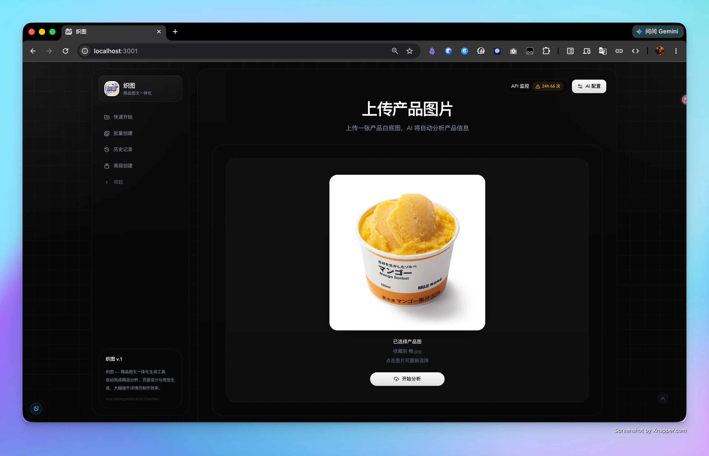
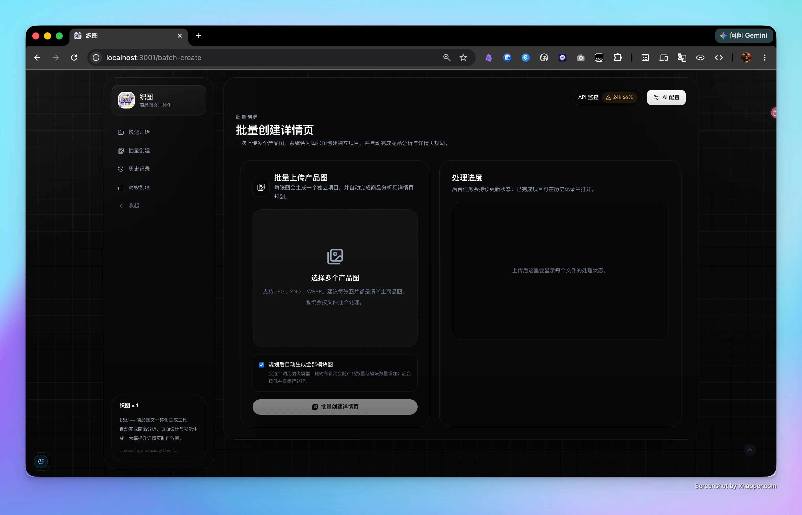
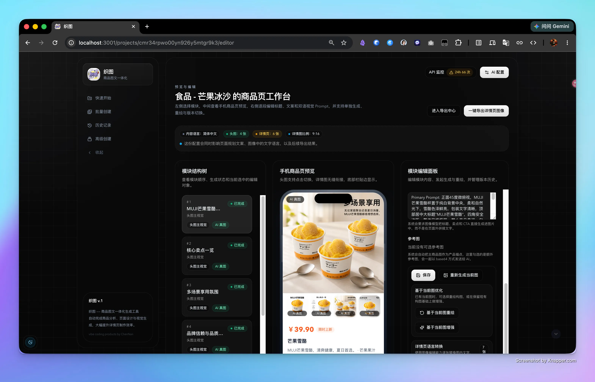
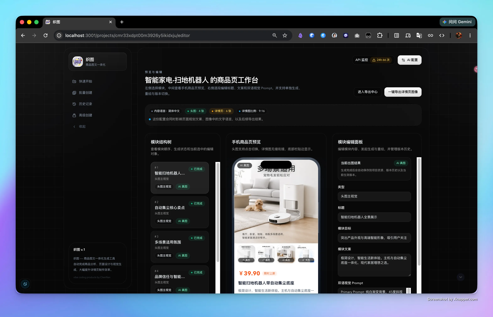

01 / 上传底图与智能分析
Upload & Analyze本地拖拽商品底图，多模态实时提取商品几何轮廓与材质特征，自动生成多维度营销卖点与排版建议。
Automated E-Commerce Graphics & Detail Pages
将素材制作成本从 ¥3000+ 降至 ¥5/套。上传商品底图，AI 自动完成商品多维度卖点提炼、视觉风格匹配与页面设计排版。把长达 3–5 天的手工作坊排期，压缩为 90 分钟端到端闭环出稿。
多品类、高频次上新让传统设计排期不堪重负，织图从架构层面逐个击破。
一套优质详情页从寄样、进棚实拍到精修上架通常需要 3–5 天。织图直接上传商品基础白底图，分钟级即可生成多套差异化版式。
运营与设计对齐难，来回修改 5–6 轮。织图拆解为四步清晰管线，每一步均支持人工干预与实时编辑，无需全盘推翻重来。
面对几十个 SKU 逐个抠图排版重复度高。织图提供批量创建与后台异步生成队列，点击启动后无需盯屏，全量自动交付。
商业机密数据严防外泄。API Key 与资产凭证仅存于浏览器本地 localStorage，不上传任何中间云数据库，更支持私有网关无缝接入。
告别黑盒随机抽卡，把每个阶段拆解为标准化、可审计的工业化模块。
上传商品底图，多模态引擎自动识别商品品类、核心卖点、材质反射与适宜场景，生成结构化的分屏排版规划。
Visual Prompt Agent 在每次提交前自动校验并优化提示词结构，锁定品牌调性、镜头角度与色彩方案，消除幻觉。
对接最新商品图文生成模型，针对各电商主流平台比例（3:4 / 1:1 / 16:9）自动渲染多语种高保真场景图与局部特写。
出图后直接在网页内置轻量画布中进行局部重绘、字体排版、对齐修正与文案微调，支持一键分层导出成品切图。
点击任意界面卡片可调出高清大图，细致查看交互细节、页面结构与出图品质。

本地拖拽商品底图，多模态实时提取商品几何轮廓与材质特征，自动生成多维度营销卖点与排版建议。

支持多任务并行后台运行，一次性覆盖主图、白底图、场景图与细节放大特写，大幅缩减重复等待时间。

无需开启繁重设计软件，直接在网页内调教色彩对比度、局部重绘商品残损部位，并自由替换排版文案。

按主流电商平台规则一键分段导出详情长图与各尺寸切图，完美满足天猫、京东、亚马逊等渠道规范。
选用工业级前沿技术选型，兼顾敏捷交付、轻量性能与本地企业级数据隐私。
“织图是商家的 AI 超级设计助理——上传商品图，自动出高转化头图和详情页，让设计师和品牌主把精力聚焦在审美判断与商业决策上。”